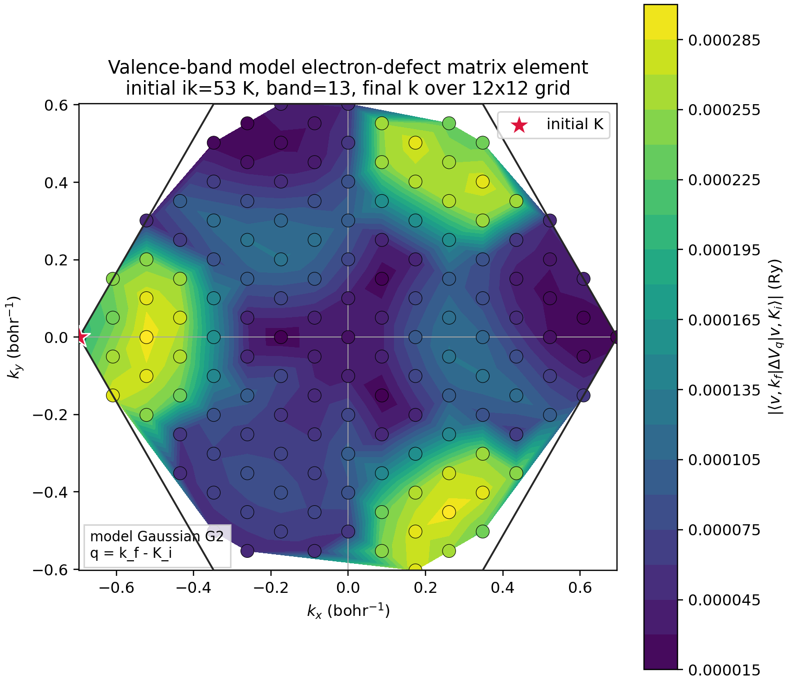
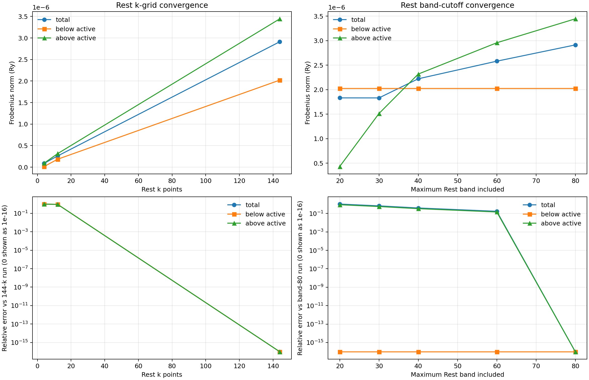
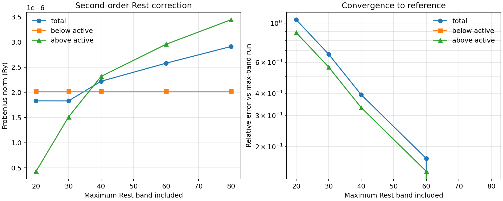
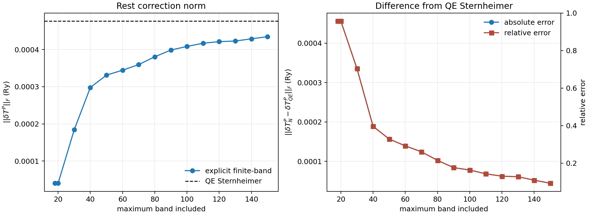
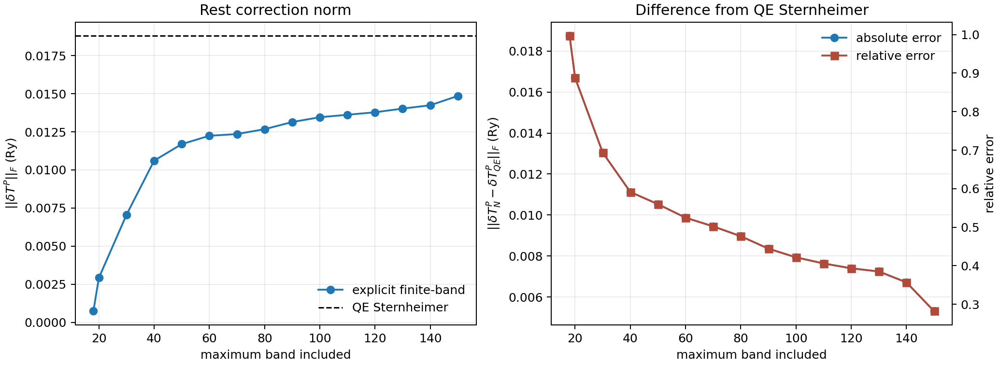

Executive Summary
The main production result is a full active-space electron-defect matrix tensor for bands 7-17 on a 12x12 k grid, including local real DeltaV and norm-conserving nonlocal projector differences. A single-k QE-Hamiltonian Sternheimer path now applies the same local+NC perturbation and computes the Rest-space partial T-matrix correction at the VBM reference energy.
Latest K-resolved Sternheimer Smoke
A selected-initial-k QE-Hamiltonian Sternheimer driver now validates the q=0 limit against the previous single-k result and runs a small cross-k smoke with initial ik=1, rest ik=1..4, and final ik=1..4.
||delta_T^P||_F = 9.22018407e-3 Ry, matching phase7 single-k.9.96e-11.max ||delta_T^P(k_f,k_i)||_F = 1.013834e-1 Ry.Key Numerical Results
| Category | Quantity | Value |
|---|---|---|
| Full active g tensor | shape | 11 x 11 x 144 x 144 |
| Full active g tensor | ||g_local||_F | 3.30084348E+02 Ry |
| Full active g tensor | ||g_NL_delta||_F | 9.01554298E+01 Ry |
| Full active g tensor | ||g_total||_F | 3.42173149E+02 Ry |
| Single-k Sternheimer second order | ||g_AA||_F | 3.02876518E+00 Ry |
| Single-k Sternheimer second order | ||delta_T^P||_F | 9.22018407E-03 Ry |
| Single-k Sternheimer full inverse | ||delta_T^P||_F | 9.13988672E-03 Ry |
| Validation | g_AA total max diff vs kpair | 8.43e-13 Ry |
| Validation | EDI vcolin cube RMS diff | 1.145281435393e-07 Ry |
Typical single-element scale for full g_total tensor
| Statistic | Value | Unit |
|---|---|---|
| mean |g_total| | 1.75133577e-01 | Ry |
| median |g_total| | 1.458795996e-01 | Ry |
| RMS |g_total| | 2.16018402e-01 | Ry |
| max |g_total| | 1.15725415e+00 | Ry |
The full tensor Frobenius norm is large because it accumulates over 11 x 11 x 144 x 144 complex elements. The single-element statistics give the more representative matrix-element scale.
Figures

Color map for |<v,k_f|g_q|v,K>| using the G2 supercell-periodic Gaussian potential.

Model-Gaussian explicit Rest correction as the Rest k grid is increased.

Model-Gaussian explicit Rest correction versus included Rest band cutoff.

Finite saved-band convergence compared with the QE-Hamiltonian Sternheimer complement.

150-band explicit convergence still misses the QE-Hamiltonian Sternheimer value.

Selected
ik_i=1, Rest ik=1..4, final ik=1..4 norms for g_AA, delta_T^P, and T^P_AA.Result Structure
| Path | Role |
|---|---|
| phase0_audit_150/ | Band, k-grid, active/rest metadata for 150-band run |
| phase1_* | Model Gaussian validation: matrix elements, finite-band sums, Krylov/Sternheimer smoke tests |
| phase2_* | Real DeltaV source audit, local cube folding, local+NC nonlocal matrix elements |
| phase7_qe_hamiltonian_sternheimer/ | QE-Hamiltonian Sternheimer outputs and explicit-vs-Sternheimer convergence plots |
| phase8_kresolved_sternheimer/ | Selected-initial-k k-resolved Sternheimer smoke tests |
| figures/ | Selected convergence and k-map figures |
| qe_sternheimer/ | QE-linked Fortran drivers and inputs used for production calculations |
| docs/ | GitHub Pages report files only |
Published web assets
| Asset | Size |
|---|---|
| g1_v1ry_explicit_vs_qe_sternheimer.png | 113.7 KB |
| kresolved_sternheimer_ik1_rest1_4_final1_4_norms.png | 512.0 KB |
| real_delta_local_vacuum_explicit_vs_qe_sternheimer.png | 126.8 KB |
| rest_band_cutoff_plot.png | 128.9 KB |
| rest_kgrid_convergence_overview.png | 253.6 KB |
| valence_band13_initialK_ik53_g2_kmap.png | 314.1 KB |
Convergence And Validation Tables
Model Gaussian Rest k-grid convergence
| Rest k points | Rest states | ||delta_TP||_F (Ry) | below (Ry) | above (Ry) | rel. error vs max k |
|---|---|---|---|---|---|
| 4 | 276 | 8.7694e-08 | 1.4689e-08 | 9.2350e-08 | 0.9785 |
| 12 | 828 | 2.5984e-07 | 1.8388e-07 | 3.1383e-07 | 0.9298 |
| 144 | 9936 | 2.9124e-06 | 2.0211e-06 | 3.4449e-06 | 0 |
Model Gaussian Rest band cutoff scan
| Band cutoff | Rest states | ||delta_TP||_F (Ry) | below (Ry) | above (Ry) | rel. error vs max cutoff |
|---|---|---|---|---|---|
| 20 | 1296 | 1.8313e-06 | 2.0211e-06 | 4.3052e-07 | 1.047 |
| 30 | 2736 | 1.8308e-06 | 2.0211e-06 | 1.5121e-06 | 0.6669 |
| 40 | 4176 | 2.2211e-06 | 2.0211e-06 | 2.3174e-06 | 0.3934 |
| 60 | 7056 | 2.5804e-06 | 2.0211e-06 | 2.9563e-06 | 0.1714 |
| 80 | 9936 | 2.9124e-06 | 2.0211e-06 | 3.4449e-06 | 0 |
Real local DeltaV explicit finite-band convergence vs QE Sternheimer
| Band cutoff | Rest states | explicit ||delta_TP||_F | QE Sternheimer ||delta_TP||_F | relative error | captured fraction |
|---|---|---|---|---|---|
| 18 | 7 | 7.3411e-04 | 0.01881 | 0.9969 | 0.03904 |
| 20 | 9 | 0.002926 | 0.01881 | 0.8875 | 0.1556 |
| 30 | 19 | 0.007059 | 0.01881 | 0.6937 | 0.3754 |
| 40 | 29 | 0.01061 | 0.01881 | 0.5915 | 0.5641 |
| 50 | 39 | 0.0117 | 0.01881 | 0.5599 | 0.6219 |
| 60 | 49 | 0.01224 | 0.01881 | 0.5248 | 0.6509 |
| 70 | 59 | 0.01236 | 0.01881 | 0.5023 | 0.657 |
| 80 | 69 | 0.01267 | 0.01881 | 0.4767 | 0.674 |
| 90 | 79 | 0.01314 | 0.01881 | 0.4445 | 0.6989 |
| 100 | 89 | 0.01346 | 0.01881 | 0.4219 | 0.7157 |
| 110 | 99 | 0.01362 | 0.01881 | 0.406 | 0.7242 |
| 120 | 109 | 0.01378 | 0.01881 | 0.3934 | 0.733 |
| 130 | 119 | 0.01403 | 0.01881 | 0.3852 | 0.7458 |
| 140 | 129 | 0.01424 | 0.01881 | 0.357 | 0.7575 |
| 150 | 139 | 0.01486 | 0.01881 | 0.2823 | 0.7901 |
Model Gaussian V0=1 Ry finite-band convergence vs QE Sternheimer
| Band cutoff | Rest states | explicit ||delta_TP||_F | QE Sternheimer ||delta_TP||_F | relative error | captured fraction |
|---|---|---|---|---|---|
| 18 | 7 | 4.0986e-05 | 4.7658e-04 | 0.957 | 0.086 |
| 20 | 9 | 4.0336e-05 | 4.7658e-04 | 0.9566 | 0.08464 |
| 30 | 19 | 1.8434e-04 | 4.7658e-04 | 0.7039 | 0.3868 |
| 40 | 29 | 2.9798e-04 | 4.7658e-04 | 0.3964 | 0.6252 |
| 50 | 39 | 3.3112e-04 | 4.7658e-04 | 0.3287 | 0.6948 |
| 60 | 49 | 3.4442e-04 | 4.7658e-04 | 0.2925 | 0.7227 |
| 70 | 59 | 3.5949e-04 | 4.7658e-04 | 0.2609 | 0.7543 |
| 80 | 69 | 3.8053e-04 | 4.7658e-04 | 0.2152 | 0.7985 |
| 90 | 79 | 3.9860e-04 | 4.7658e-04 | 0.1766 | 0.8364 |
| 100 | 89 | 4.0833e-04 | 4.7658e-04 | 0.1639 | 0.8568 |
| 110 | 99 | 4.1696e-04 | 4.7658e-04 | 0.1436 | 0.8749 |
| 120 | 109 | 4.2124e-04 | 4.7658e-04 | 0.131 | 0.8839 |
| 130 | 119 | 4.2288e-04 | 4.7658e-04 | 0.1282 | 0.8873 |
| 140 | 129 | 4.2879e-04 | 4.7658e-04 | 0.1098 | 0.8997 |
| 150 | 139 | 4.3458e-04 | 4.7658e-04 | 0.0932 | 0.9119 |
Interpretation
The 150-band explicit sums improve with band cutoff but remain below the QE-Hamiltonian Sternheimer reference. For the real local DeltaV test, the explicit 150-band result captures about 79 percent of the QE Sternheimer Frobenius norm. This supports using the Sternheimer complement rather than relying on saved high-energy bands for production Rest-space partial scattering.
The inserted NC nonlocal projector action is numerically consistent with the independently validated selected-kpair matrix-element driver. The total active block difference is below 1e-12 Ry, so the same perturbation is being applied in the matrix-element and Sternheimer paths.
The current active-space dynamic resummation is not included in this report. The reported T^P_AA values are Rest-space partial scattering results evaluated at the VBM reference energy.
Reproducibility Notes
| Task | Command or input |
|---|---|
| Build QE-linked drivers | module reset; module load aocc/3.1.0 openmpi/4.1.6; module load amdblis/3.0 amdlibflame/3.0 amdlibm/3.0 fftw; make -C qe_sternheimer qe_hamiltonian_sternheimer_smoke.x qe_real_delta_nonlocal_kgrid.x qe_kresolved_sternheimer_smoke.x |
| Full 144x144 active g tensor | sbatch qe_sternheimer/run_real_delta_nonlocal_kgrid_full_144x144.sh |
| Single-k real DeltaV local+NC Sternheimer | qe_sternheimer/qe_hamiltonian_sternheimer_smoke.x -i qe_sternheimer/qe_hamiltonian_sternheimer_real_delta_vacuum_nonlocal.in |
| Single-k full Rest inverse | qe_sternheimer/qe_hamiltonian_sternheimer_smoke.x -i qe_sternheimer/qe_hamiltonian_sternheimer_real_delta_vacuum_nonlocal_full_inverse.in |
| K-resolved Sternheimer smoke | qe_sternheimer/qe_kresolved_sternheimer_smoke.x -i qe_sternheimer/qe_kresolved_sternheimer_ik1_rest1_4_final1_4_real_delta_vacuum_nonlocal.in |
| Key inputs | qe_sternheimer/qe_real_delta_nonlocal_kgrid_full_144x144.in; qe_sternheimer/qe_hamiltonian_sternheimer_real_delta_vacuum_nonlocal*.in; qe_sternheimer/qe_kresolved_sternheimer_ik1_rest1_*.in |
Key source/result files summarized in this page
phase0_audit_150/summary.json phase2_qe_nonlocal_kgrid/i1_144_f1_144_ab7_17_real_delta_vacuum_report.md phase7_qe_hamiltonian_sternheimer/ik1_ab7_17_real_delta_vacuum_nonlocal_qehpsi_second_order_report.md phase7_qe_hamiltonian_sternheimer/ik1_ab7_17_real_delta_vacuum_nonlocal_qehpsi_full_inverse_report.md phase7_qe_hamiltonian_sternheimer/ik1_ab7_17_real_delta_vacuum_nonlocal_vs_kpair_report.md phase8_kresolved_sternheimer/ik1_rest1_4_final1_4_real_delta_vacuum_nonlocal_second_order_report.md phase8_kresolved_sternheimer/ik1_rest1_4_final1_4_real_delta_vacuum_nonlocal_second_order_pair_summary.csv phase2_real_delta_local_vacuum/edi_vcolin_compare_report.md
Warnings: Files Not Published
This GitHub Pages artifact intentionally does not include raw wavefunctions, binary tensors, cube grids, scheduler logs, local settings, or private credential-like files.
| Class | Reason |
|---|---|
| Raw wavefunctions and QE save directories | Excluded. These include large .dat/.save data and are not suitable for GitHub Pages. |
| Binary tensors | Excluded. The 144x144 complex128 g tensors are about 39 MB each and are summarized instead. |
| Cube and npz grids | Excluded. Supercell cube files are about 231 MB each; NPZ grids can be greater than 100 MB. |
| Logs and scheduler output | Excluded. .out/.err/.log files are ignored. |
| Local/private config | Excluded. .claude/settings.local.json and any key/token-like files are ignored. |
Large files found during safety scan
| File | Size |
|---|---|
| phase2_real_delta_local_vacuum/real_delta_local_q0_vacuum_supercell_delta.cube | 230.7 MB |
| phase2_real_delta_local/real_delta_local_q0_supercell_delta.cube | 230.7 MB |
| phase1_gaussian/gaussian_model_supercell_6x6x1_grid.npz | 136.7 MB |
| phase2_qe_nonlocal_kgrid/i1_144_f1_144_ab7_17_real_delta_vacuum_g_total_complex128.bin | 38.3 MB |
| phase2_qe_nonlocal_kgrid/i1_144_f1_144_ab7_17_real_delta_vacuum_g_nl_delta_complex128.bin | 38.3 MB |
| phase2_qe_nonlocal_kgrid/i1_144_f1_144_ab7_17_real_delta_vacuum_g_local_complex128.bin | 38.3 MB |
| qe_sternheimer/qe_hamiltonian_sternheimer_smoke.x | 14.9 MB |
| qe_sternheimer/qe_real_delta_nonlocal_kgrid.x | 14.9 MB |
| qe_sternheimer/qe_real_delta_nonlocal_kpair.x | 14.9 MB |
| phase2_real_delta_kpair/ik1_to_ik2_ab7_17_real_delta_vacuum_matrices.npz | 14.0 MB |
| phase2_real_delta_local_core/real_delta_local_q0_core_grid.npz | 10.0 MB |
| phase2_real_delta_local_vacuum/real_delta_local_q0_vacuum_grid.npz | 9.9 MB |
| phase2_real_delta_local/real_delta_local_q0_grid.npz | 9.6 MB |
| phase2_real_delta_kpair/ik1_to_ik1_ab7_17_real_delta_vacuum_matrices.npz | 7.0 MB |
| phase2_real_delta_local_vacuum/real_delta_local_q0_vacuum_folded_q0_sum.cube | 6.4 MB |
| phase2_real_delta_local/real_delta_local_q0_folded_q0_sum.cube | 6.4 MB |